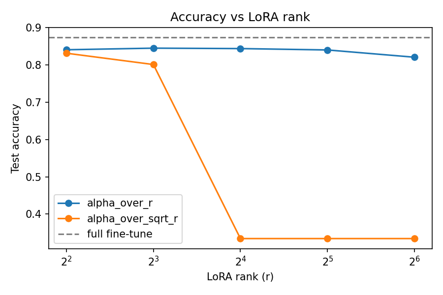
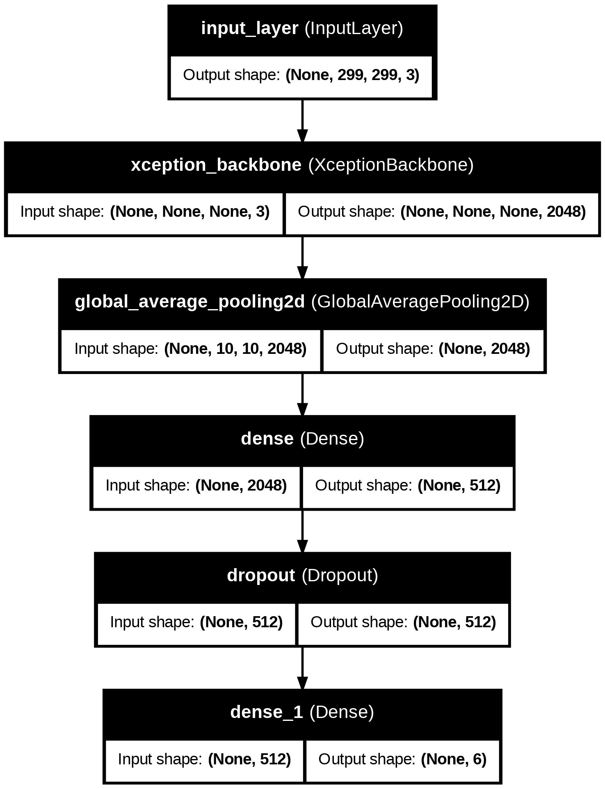

About Me
I build machine learning for healthcare data, with a background that spans the lab bench, medical device design and computer science. I care most about whether a model holds up on real clinical data, not just on a benchmark.
Data from the source
Before I modeled data, I generated it — crypt isolation, 3D organoid culture, microscopy-based quantification, in the Asfaha Lab at Western.
Models from first principles
I implemented LoRA from scratch and traced a rank-16 training collapse to its cause, and ran a controlled 8-model CNN ablation to isolate why batch norm and residual connections underperformed at this data scale.
Biomedical Device Development
On a Class III device project, I helped trace 240+ design inputs to tests and assess 60+ hazards.
Clear communication
I write to make dense material usable — from project documentation to a children's anatomy book translating physiology for readers aged 6–10.
Experience & Research
Machine Learning Research Assistant · Krembil Brain Institute
Built an end-to-end Python pipeline to analyze brain MRI data for Parkinson's disease diagnosis, automating preprocessing, segmentation and radiomics feature extraction.
Biomedical Device Development Project · University of Toronto (MEng)
In a team of 6, developed a Class III, MRI-guided brain tumour ablation device concept under ISO 13485. Contributed to design inputs, verification testing, and risk and hazard analysis, tracing market requirements to testing.
Honours Thesis · Western University (Asfaha Lab)
Compared R-spondin 1 and 3 effects on colonic organoid regeneration using organoids from colitis-model and control mice, quantifying organoid number, budding and size from serial microscopy images. Found significantly fewer organoids in R-spondin 3 cultures from colitis mice, contradicting prior in-vivo findings.
Featured Projects

Test accuracy: LoRA vs. full fine-tuning
LoRA rows use alpha/r scaling. The red row is the collapse to a single predicted class. LoRA trained on a 25K-sentence subsample for 1–2 epochs, while the full fine-tune used all 177K sentences for 3 epochs, so the real gap is likely narrower.

Test accuracy by architecture
Teal bars beat the plain CNN baseline (white). Pretrained models used 299×299 inputs and from-scratch models used 150×150. Each from-scratch stage adds one technique to the previous stage.

Skills Matrix
Programming & Languages
Machine Learning & AI
Clinical & Biomedical
Regulated Environments
Education
University of Pennsylvania
Master of Computer and Information Technology (Computer Science)
University of Toronto
Master of Engineering, Biomedical Engineering
Western University
Bachelor of Medical Sciences, Honours Specialization in Physiology and Pharmacology
Get in Touch
Open to Work
I'm actively looking for machine learning and medtech roles where I can combine clinical physiology, biomedical data pipelines and custom AI architecture. I'm especially interested in:
- ML engineer or data scientist roles in health and biomedical settings, such as clinical imaging or biomedical text
- Medical device and digital health teams that build regulated software or AI-enabled devices
- Clinical and biomedical data analyst roles, working with research and clinical datasets
The best way to reach me is by email.
Say Hello / Email Me